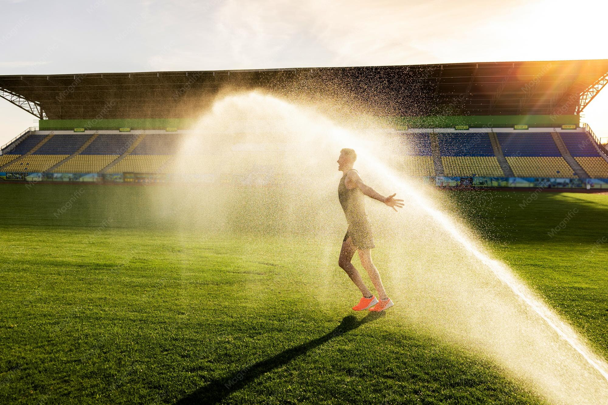

FIFA cancela a Copa do Mundo após regarem o gramado com energético e a grama sofrer uma overdose.
Por: Marcelo Paludetto
O campo entrou em colapso cardíaco, começou a tremer violentamente e engoliu o estádio inteiro em um ataque de pânico.